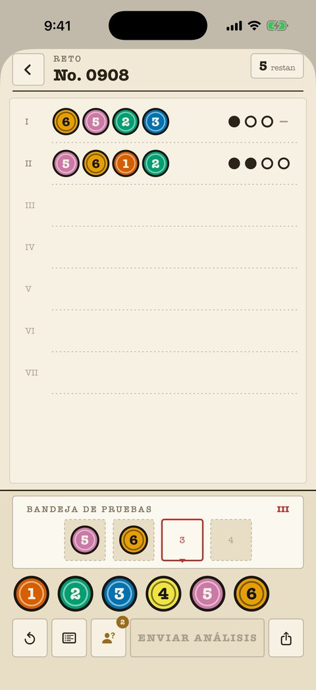

Casos clásicos
240 casos de principiante a maestro, cada uno una hoja numerada del expediente. El contador de intentos está arriba a la derecha; las marcas son tinta pura —punto, anillo, raya— y nunca dependen del color.
- Cada análisis anterior se queda en la hoja para cruzar datos.
- Las notas del tablero marcan colores descartados y confirmados.
- El ajuste «Marcas de forma» da a cada color su propia silueta.
- Los primeros 40 casos son gratis.